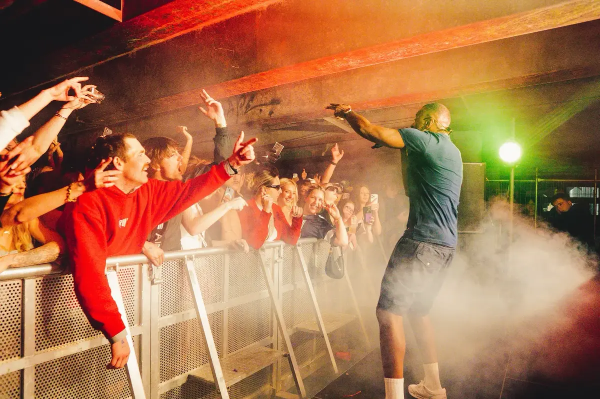

We hire out Pioneer CDJ-3000s, DJM-900NXS2 mixers, and full DJ booth packages. The gear is well looked after and tested before every hire. No scratched jog wheels, no dodgy faders, no surprises on the night.
If you're a DJ playing a gig and need a rider-spec setup, we have you sorted. If you're organising a party and need someone to bring the decks, set them up, and make sure everything works, that's what we do. We can pair the DJ gear with a speaker system for a complete party package.

The standard club setup. 2x CDJ-3000s and a DJM-900NXS2. We can also do 4-deck setups for back-to-back sets or longer events. Comes with all the cables and power you need.
Nobody wants decks sitting on a wobbly trestle table. We build proper DJ booths with truss or custom facades. Clean looking, sturdy, and the right height. Popular for school balls and private events where the booth is a focal point.
DJ gear plus speakers, subs, and basic lighting in one hire. Great for birthdays, flat parties, and small events where you just want to plug in and play. We deliver, set it up, and pick it up the next day.
We've supplied DJ setups for club nights, festivals, house parties, and school balls all over Christchurch and Canterbury. We know what DJs need because we work with them every week. The gear is current, clean, and properly maintained.
If you need a full PA system to go with the DJ gear, or you're planning a bigger event and want production as well, take a look at our services page. Got questions? Drop us a line.
Tell us about your event and we'll put a package together.
Get in touch or call 021 178 0355.
We hire out DJ gear. We don't supply DJs directly, but we know plenty of good ones around Christchurch and can point you in the right direction if you need a recommendation.
A typical DJ booth package includes 2x CDJ-3000s, a DJM-900NXS2 mixer, a booth table or truss booth, and monitoring. We can also add lighting, speakers, and subs to make it a full party package.
Yes. You can hire CDJs, mixers, or any combination of DJ gear on its own. We also hire turntables if that's your thing.
All Ears Events Limited
20 Southwark Street, Christchurch
021 178 0355 · hello@allears.nz
Mon-Fri 9am-4pm